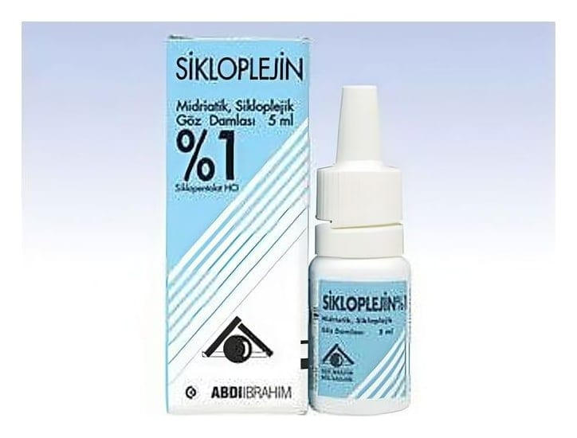

Sikloplejin %1 Göz Damlası, Çözelti, 5 ml

Ne için kullanılır
KT · Bölüm 1SİKLOPLEJİN, berrak, renksiz, temiz sıvıdır. SİKLOPLEJİN, şişe içerisinde 5 ml damla olarak kullanıma sunulmuş olan ve gözdeki çeşitli muayene ve ameliyat işlemleri öncesinde göz bebeğini genişletmek için kullanılan bir göz damlasıdır. SİKLOPLEJİN’in etkin maddesi Siklopentolat Hidroklorür göz bebeğini genişleterek çeşitli muayenelerde ve göz ameliyatlarında ve gözdeki bazı iltihabi durumların önlenmesinde ve tedavisinde kullanılır.